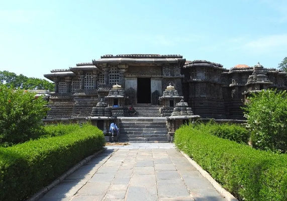

My Hobbies
Travelling
Karnatak Travelling

Karnataka is a state in the south-western region of India. It was formed on 1 November 1956, with the passage of the States Reorganisation Act. Originally known as the State of Mysore , it was renamed Karnataka in 1973. The state corresponds to the Carnatic region. Its capital and largest city is Bangalore.
Karnataka is bordered by the Arabian sea to the west, Goa to the northwest,Maharashtra to the north, Telangana to the northeast,
Andhra Pradesha to the east, Tamil Nadu to the southeast, and Kerala to the southwest. It is the only southern state to have land borders with
all of the other four southern Indian sister states. The state covers an area of 191,791Km 2 (74,051 2 mi), or 5.83 percent
of the total geographical area of India. It is the sixth-largest Indian state by area. With 61,130,704 inhabitants at the 2011 census,
Karnataka is the eighth-largest state by population, comprising 31 districts. Kannada, one of the classical languages of India,
is the most widely spoken and official language of the state. Other minority languages spoken include Urdu, Konkani, Marathi, Tulu,
Tamil, Telugu, Malayalam, Kodava and Beary. Karnataka also contains some of the only villages in India where Sanskrit is primarily
spoken.
Belgavi
A land of Bravery and innocent
Though several etymologies have been suggested for the name
Karnataka, the generally accepted one is that Karnataka is
derived from the Kannada words karu and nādu, meaning
"elevated land". Karu Nadu may also be read as karu, meaning
"black" and nadu, meaning "region", as a reference to the black
cotton soil found in the Bayalu Seeme region of the state.
The British used the word Carnatic, sometimes Karnatak, to
describe both sides of peninsular India, south of the Krishna.
Gokak falls(Belgavi)

After a long winding course, the Ghataprabha river falls 52
metres (171 ft) over the sandstone cliff amidst a picturesque
gorge of the rugged valley. At the crest, the horseshoe-shaped
waterfall has a flood breadth of 177 meters (581 ft) It also has a
hanging bridge which is an attraction for people visiting Gokak.